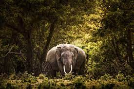
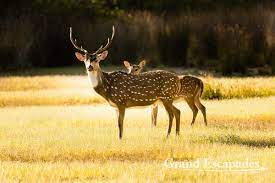
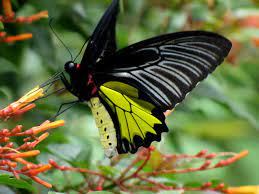
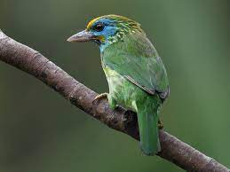

The Sri Lankan elephant is the largest land mammal in Sri Lanka and holds cultural significance. Known for its distinctively small size and gentle behavior, it is a common sight in national parks.
The Sri Lankan leopard is the country's top predator. With a golden-yellow coat and distinct rosette patterns, it is an elusive and endangered species found in the country's national parks.

TThe sloth bear is a unique and shaggy-coated species in Sri Lanka. Despite its name, it is not related to sloths. It's known for its distinctive white "V" or "Y" shape on its chest.

An endemic primate species, the purple-faced langur is recognized by its dark fur and distinctive purple face. It is primarily arboreal and can be found in the island's forests.

Also known as the axis deer or chital, the spotted deer is a common and graceful herbivore in Sri Lanka. It is easily recognizable by its spotted coat and antlers.
A native primate, the toque macaque is easily identified by its unique toque-like hairstyle. They are social animals often found in groups in various habitats.

The ruddy mongoose is a small carnivore with a reddish-brown coat. It is known for its agility and is often spotted in forested areas.

The Sri Lankan junglefowl is the national bird of Sri Lanka. Males are vibrant and colorful with distinctive red and blue markings. They are found in both forested and open habitats.

This is the largest butterfly species in Sri Lanka and is known for its striking black and yellow coloration. The males are particularly impressive with their long, sword-like tails.
Easily identified by its yellow forehead and vibrant green plumage, the Yellow-fronted Barbet is a common bird in Sri Lanka's lowland rainforests.
